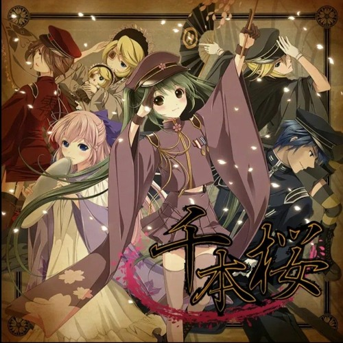
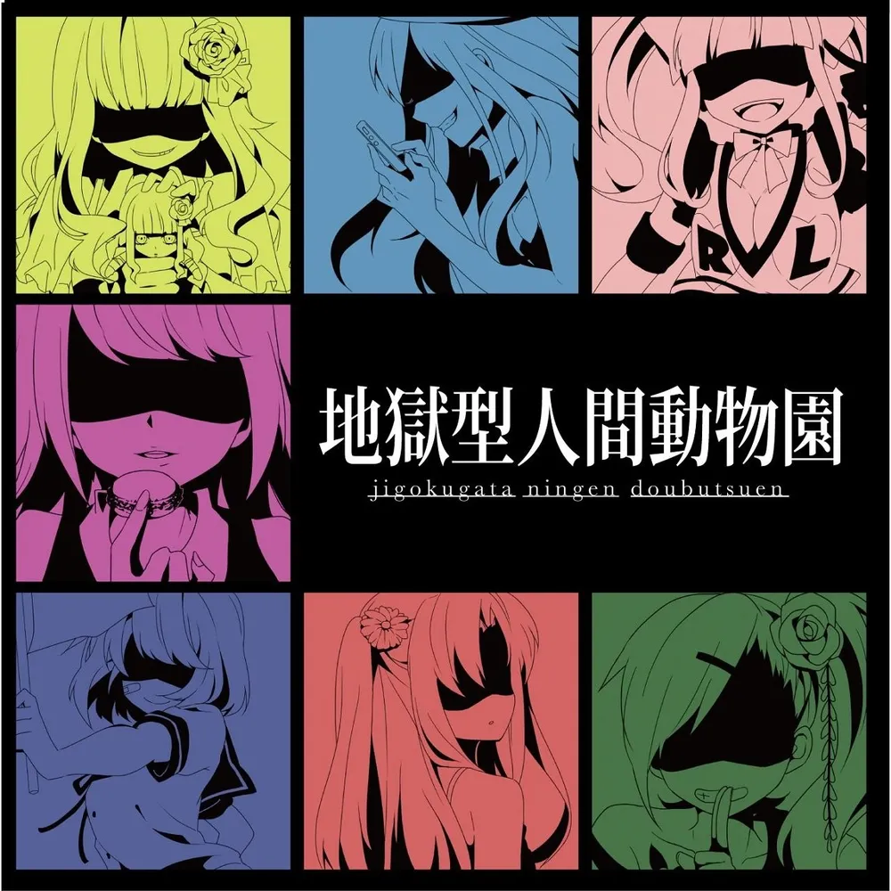

기존 모델
애니메이션 / 게임 (원작)
➔
음악 (부속 OST)
역방향 확장
음악 (보컬로이드 악곡)
➔
팬덤의 세계관 해석·추리
➔
소설 · 만화 · 애니메이션 제작
1. 「천본앵」 (2011)
서브컬처 음악의 주류 시장 진입

- 대중적 파급력: 직관적인 록 사운드와 강렬한 시각 콘셉트로 서브컬처 경계를 넘어 대중가요 씬을 강타.
- 주류 지표 점령: 노래방 종합 차트 최상위권(JOYSOUND 3위) 석권, 가부키 공연 및 대형 라이브 확장으로 입증된 주류 침투력.
2. 『카게로우 프로젝트』 (2011~)
음악이 이끄는 세계관

- 파편화된 서사: 독립 악곡들에 흩어진 단서와 루프 설정을 팬들이 조립하는 '추리적 향유' 확립.
- 원천 IP화: 음악 앨범 자체가 프랜차이즈 기획서가 되어 소설·코믹스·애니메이션(2014)으로 확장되는 선례 구축.